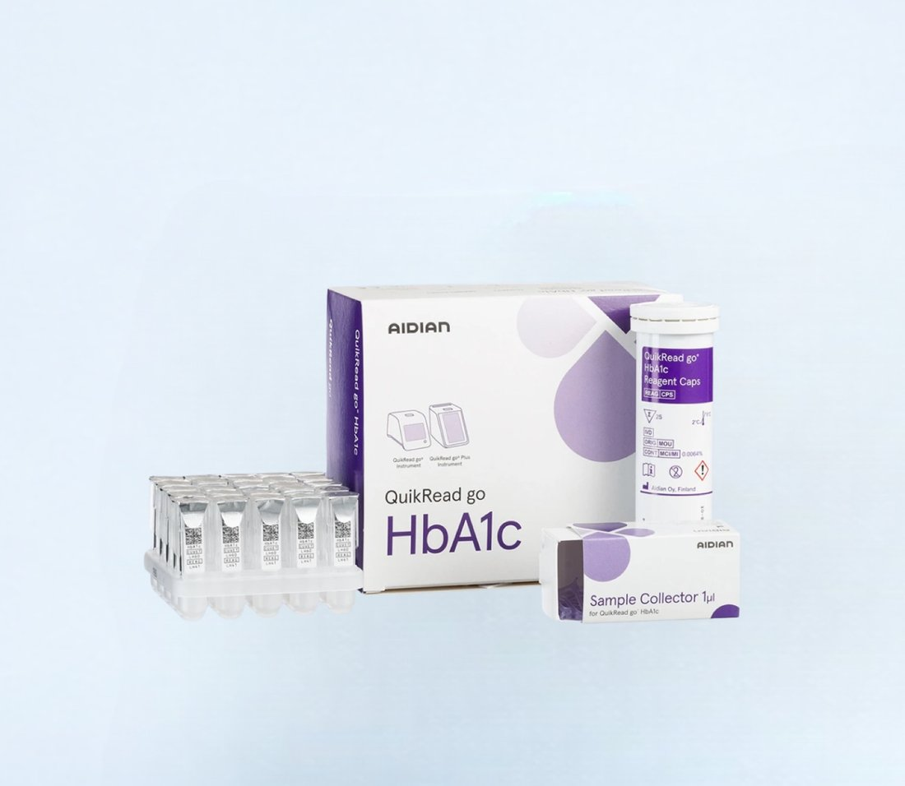

iFOB Automatizada
QuikRead go Plus
Analizador de mesa con pantalla táctil, plataforma de los kits QuikRead go.
Ver más
Kit reactivo de Aidian (Finlandia) para la determinación de hemoglobina glicosilada (HbA1c) en el punto de atención, procesado de forma automatizada sobre la plataforma QuikRead go / QuikRead go Plus.
Disponibilidad sujeta a stock. Despacho a laboratorios y centros de atención en todo Chile con soporte técnico incluido.
El kit QuikRead go HbA1c de Aidian permite cuantificar la hemoglobina glicosilada (HbA1c) directamente en el punto de atención, procesándose de forma automatizada en el analizador QuikRead go / QuikRead go Plus. El kit incluye las cápsulas de reactivo y un colector de muestra capilar de volumen mínimo (1 μL), diseñado para simplificar la toma de muestra junto al paciente.
Al entregar el resultado sobre la misma plataforma que otros ensayos QuikRead go, permite a laboratorios y centros de atención estandarizar equipos y flujo de trabajo para el control metabólico de pacientes diabéticos.
Recomendado para el manejo de pacientes en los siguientes entornos clínicos:
| Analito | Hemoglobina glicosilada (HbA1c) |
|---|---|
| Tipo de muestra | Sangre capilar, mediante colector de muestra de 1 μL incluido en el kit |
| Plataforma de lectura | Analizador QuikRead go / QuikRead go Plus (automatizada) |
| Contenido del kit | Cápsulas de reactivo QuikRead go HbA1c y colector de muestra capilar (Sample Collector 1 μL) |
| Marca | Aidian (Finlandia) |
Rango de medición, trazabilidad, condiciones de almacenamiento y estabilidad detallados están disponibles bajo solicitud junto con el inserto oficial del fabricante — contáctanos para recibir la documentación completa.
Ficha técnica e inserto del fabricante disponibles bajo solicitud. Contáctanos para recibirlos.